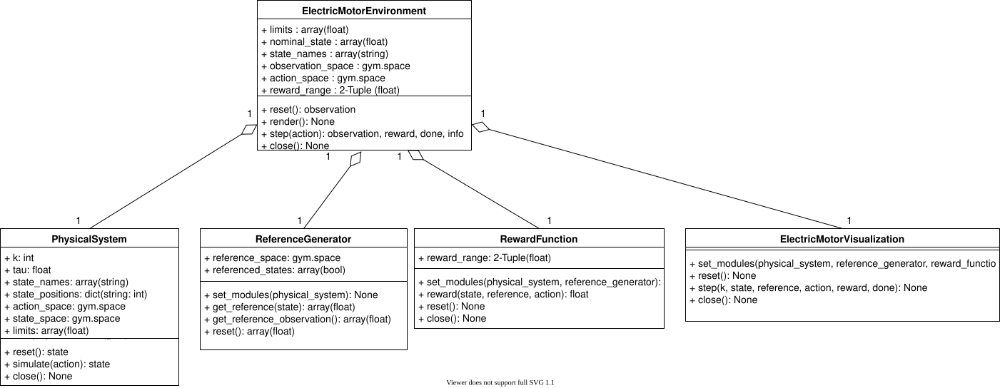

Core

On the core level the electric motor environment and the interface to its submodules are defined. By using these interfaces further reference generators, reward functions, visualizations or physical models can be implemented.
Each ElectricMotorEnvironment contains the five following modules:
- PhysicalSystem
Specification and simulation of the physical model. Furthermore, specifies limits and nominal values for all of its
state_variables.
- ReferenceGenerator
Calculation of reference trajectories for one or more states of the physical systems
state_variables.
- ConstraintMonitor
Observation of the PhysicalSystems state to comply to a set of user defined constraints.
- RewardFunction
Calculation of the reward based on the physical systems state and the reference.* ElectricMotorVisualization
Visualization of the PhysicalSystems state, reference and reward for the user.
- class gym_electric_motor.core.Callback[source]
Bases:
objectThe abstract base class for Callbacks in GEM. Each of its functions gets called at one point in the
ElectricMotorEnvironment. .. attribute:: _envThe GEM environment. Use it to have full control over the environment on runtime.
- class gym_electric_motor.core.ElectricMotorVisualization[source]
Bases:
CallbackBase class for all visualizations in GEM.
Notes
This class extends
Callbackby addingrender()to update the user interface. Data is transferred via the inherited callback hooks (e.g.,on_step_end()) and rendered insiderender().- on_close()
Gets called at the beginning of a close
- on_reset_begin()
Gets called at the beginning of each reset
- on_reset_end(state, reference)
Gets called at the end of each reset
- on_step_begin(k, action)
Gets called at the beginning of each step
- on_step_end(k, state, reference, reward, terminated)
Gets called at the end of each step
- set_env(env)
Sets the environment of the motor.
- class gym_electric_motor.core.PhysicalSystem(action_space, state_space, state_names, tau)[source]
Bases:
objectThe Physical System module encapsulates the physical model of the system as well as the simulation from one step to the next.
- Parameters:
- close()[source]
Called, when the environment is closed. Close the System and all of its submodules by closing files, saving logs etc.
- reset(initial_state=None)[source]
Reset the physical system to an initial state before a new episode starts.
- Returns:
The initial systems state
- Return type:
element of state_space
- simulate(action)[source]
Simulation of the Physical System for one time step with the input action. This method is called in the environment in every step to update the systems state.
- Parameters:
action (element of action_space) – The action to play on the system for the next time step.
- Returns:
The systems state after the action was applied.
- Return type:
element of state_space
- property action_space
Returns: gymnasium.Space: An Farama Gymnasium Space that describes the possible actions on the system.
- property k
Returns: int: The current systems time step k.
- property limits
Returns: ndarray(float): An array containing the maximum allowed physical values for each state variable.
- property nominal_state
Returns: ndarray(float): An array containing the nominal values for each state variable.
- property state_names
Returns: ndarray(str): Array containing the names of the systems states.
- property state_positions
Returns: dict(int): Dictionary mapping the state names to its positions in the state arrays
- property state_space
Returns: gymnasium.Space: An Farama Gymnasium Space that describes the possible states of the system.
- property tau
- property unwrapped
Returns this instance of the physical system.
If the system is wrapped into multiple PhysicalSystemWrappers this property returns directly the innermost system.
- class gym_electric_motor.core.ReferenceGenerator[source]
Bases:
objectThe abstract base class for reference generators in gym electric motor environments.
- reference_space:
Space of reference observations as defined in the Farama Gymnasium Toolbox.
The reference generator is called twice per step.
- Call of get_reference():
Returns the reference array which has the same shape as the state array and contains values for currently referenced state variables and a default value (e.g zero) for non-referenced variables. This reference array is used to calculate rewards.
- Example:
reference_array=np.array([0.8, 0.0, 0.0, 0.0])state_variables=['omega', 'torque', 'i', 'u', 'u_sup']Here, the state consists of five quantities but only
'omega'is referenced during control.
- Call of get_reference_observation():
Returns the reference observation, which is shown to the agent. Any shape and content is generally valid, however, values must be within the declared reference space. For example, the reference observation may contain future reference values of the next
nsteps.- Example:
reference_observation = np.array([0.8, 0.6, 0.4])This reference observation may be valid for an omega-controlled environment that shows the agent not only the reference for the next time step omega_(t+1)=0.8 but also omega_(t+2)=0.6 and omega_(t+3)=0.4.
- close()[source]
Called by the environment, when the environment is deleted to close files, store logs, etc.
- get_reference(state, *_, **__)[source]
Returns the reference array of the current time step.
The reference array needs to be in the same shape as the state variables. For referenced states the reference value is passed. For unreferenced states a default value (e.g. Zero) can be set in the reference array.
- get_reference_observation(state, *_, **__)[source]
Returns the reference observation for the next time step. This observation needs to fit in the reference space.
- Parameters:
state (ndarray(float)) – Current state array of the environment.
- Returns:
Observation for the next reference time step.
- Return type:
value in reference_space
- reset(initial_state=None, initial_reference=None)[source]
Reset of references for a new episode.
- Parameters:
- Returns:
The reference array at time step 0.
reference_observation(value in reference_space): The reference observation for the next time step.
trajectories(dict(list(float)): If available, generated trajectories for the Visualization can be passed here. Otherwise return None.
- Return type:
reference_array(ndarray(float))
- set_modules(physical_system)[source]
Announcement of the PhysicalSystem to the ReferenceGenerator.
In subclasses, store all important information from the physical system to the ReferenceGenerator here. The environment announces the physical system to the ReferenceGenerator during its initialization.
- Parameters:
physical_system (PhysicalSystem) – The physical system of the environment.
- property reference_names
Returns: reference_names(list(str)): A list containing all names of the referenced states in the reference observation.
- property referenced_states
Returns: ndarray(bool): Boolean-Array with the length of the state_variables indicating which states are referenced.
- class gym_electric_motor.core.RewardFunction[source]
Bases:
objectThe abstract base class for reward functions in gym electric motor environments.
The reward function is called once per step and returns reward for the current time step.
- reset(initial_state=None, initial_reference=None)[source]
This function is called by the environment when reset.
Inner states of the reward function can be reset here, if necessary.
- reward(state, reference, k=None, action=None, violation_degree=0.0)[source]
Reward calculation. If limits have been violated the reward is calculated with a separate function.
- Parameters:
state (ndarray(float)) – Environments state array.
reference (ndarray(float)) – Environments reference array.
k (int) – Systems momentary time-step
action (element of action space) – The previously taken action.
violation_degree (float in [0.0, 1.0]) – Degree of violation of the constraints. 0.0 indicates that all constraints are complied. 1.0 indicates that the constraints have been so much violated, that a reset is necessary.
- Returns:
Reward for this state, reference, action tuple.
- Return type:
- set_modules(physical_system, reference_generator, constraint_monitor)[source]
Setting of the physical system, to set state arrays fitting to the environments states
- Parameters:
physical_system (PhysicalSystem) – The physical system of the environment
reference_generator (ReferenceGenerator) – The reference generator of the environment.
constraint_monitor (ConstraintMonitor) – The constraint monitor of the environment.